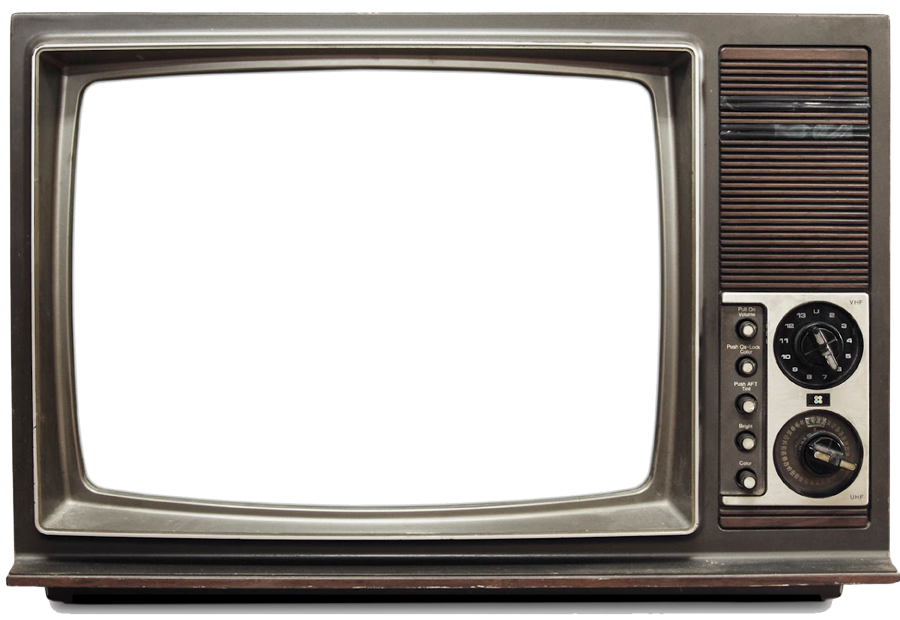

The
Twist
"The Twist" is an American pop song written and originally released in early 1959 by Hank Ballard and the Midnighters as a B-side to "Teardrops on Your Letter". Ballard's version was a moderate 1960 hit, peaking at number 28 on the Billboard Hot 100.
1960
